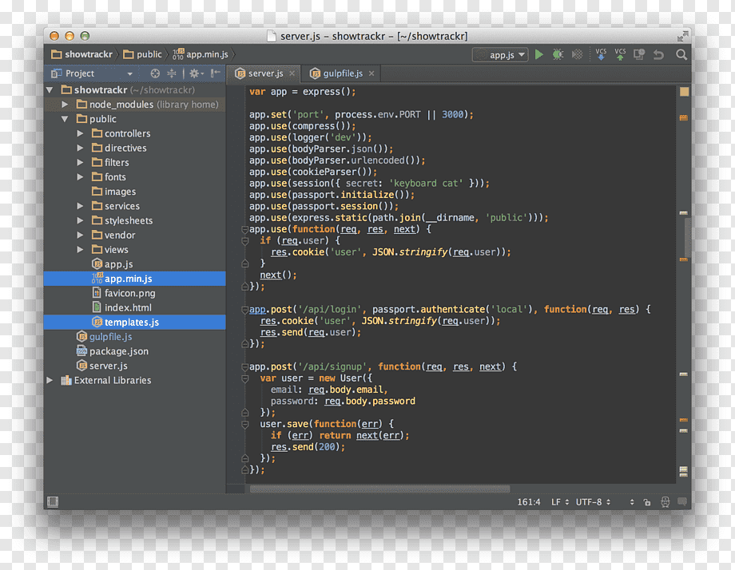
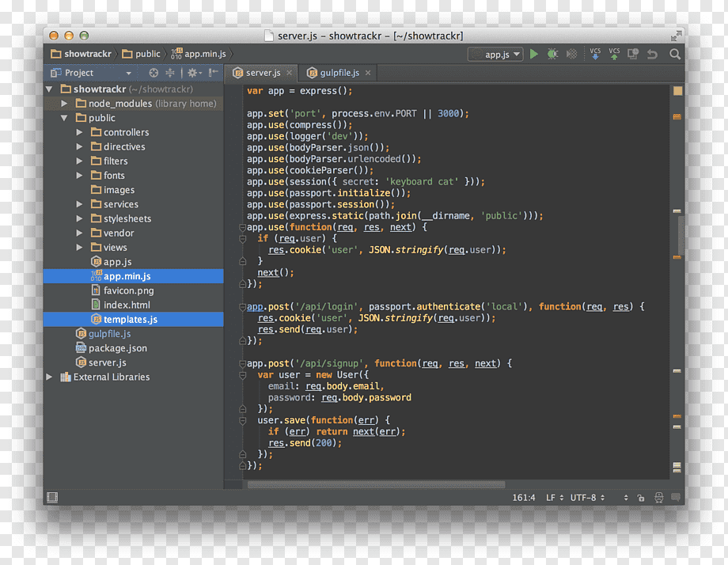

¿Qué es Node.js?
Node.js es un entorno de ejecución y una biblioteca de código abierto y multiplataforma para ejecutar aplicaciones web fuera del navegador del cliente. Ryan Dahl lo desarrolló en 2009 y es una herramienta ideal para aplicaciones escalables y de alto rendimiento.
 
